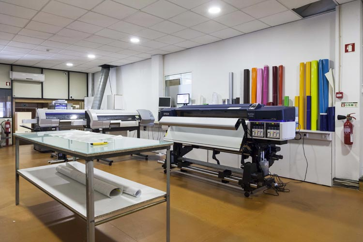

Empresas com atividade documentada nesta área
Exemplos para compreender funções e modelos de trabalho. As atividades são atribuídas às fontes oficiais consultadas; não constituem uma recomendação comercial.
Solo midocean
Países Baixos · sede
Fornecimento, impressão e logística
Identifica instalações próprias de logística e impressão na Polónia. Documenta também dobragem, etiquetas e embalagem, com opções que variam por pedido e região.
Ler o perfil de Solo midocean →Fontes: Solo midocean — Locations · Solo midocean — Special handling
Transformar o artigo
Personalização é aplicar uma mensagem ou identidade ao produto. Pode envolver impressão, gravação ou bordado. Acabamento inclui operações que completam a apresentação ou a montagem. Uma oficina especializada pode receber artigos de terceiros; um fornecedor integrado pode disponibilizar produto e personalização no mesmo pedido.

Operação própria ou externa
A integração de fornecimento e impressão não é universal: noutros pedidos, a personalização pode ser contratada a uma entidade distinta. Sem uma fonte explícita, não se atribui execução própria a um fornecedor. Mesmo quando existem instalações próprias, importa confirmar onde e por quem será executado o pedido concreto.
Informação que acompanha o pedido
O artigo, a quantidade, a arte e a zona de aplicação precisam de estar definidos. A maquete representa a aplicação pretendida; não substitui um ensaio físico quando este é necessário. A aprovação da arte, a execução, o controlo e o acabamento devem ter responsáveis identificados. O percurso apresentado é uma síntese de operações possíveis, não a descrição de uma empresa específica.
Fontes e âmbito
Fontes oficiais consultadas para as atividades atribuídas às empresas. As explicações das funções e do percurso são sínteses editoriais; não descrevem um modelo universal nem avaliam o desempenho dos fornecedores.
- Solo midocean — Locations — consulta: .
- Solo midocean — Special handling — consulta: .